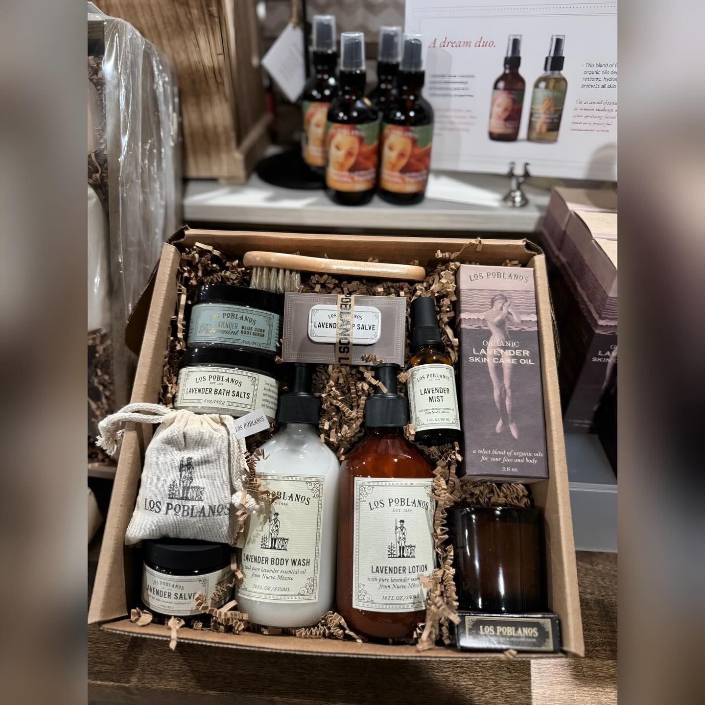
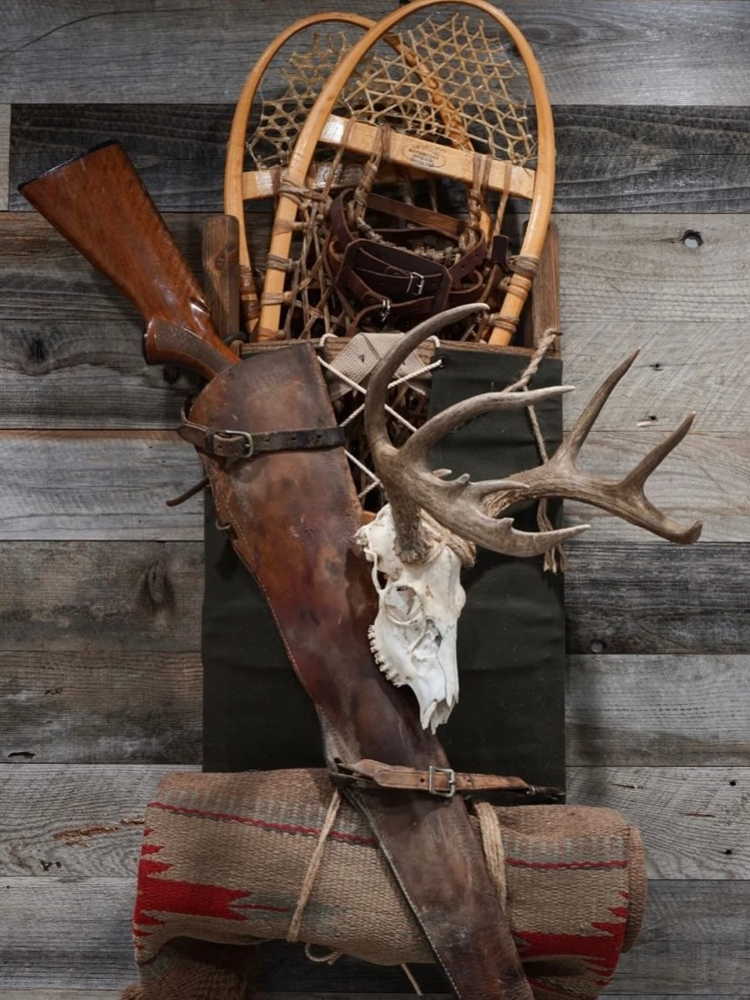
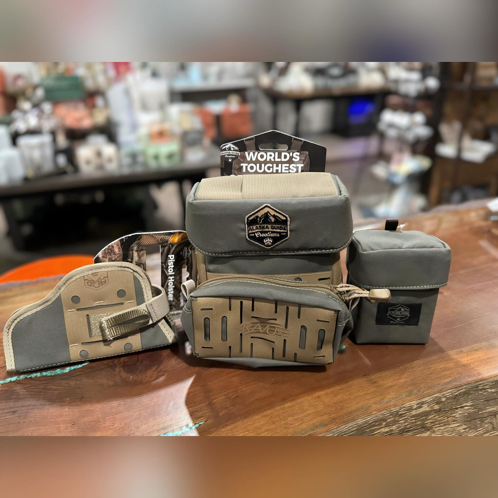
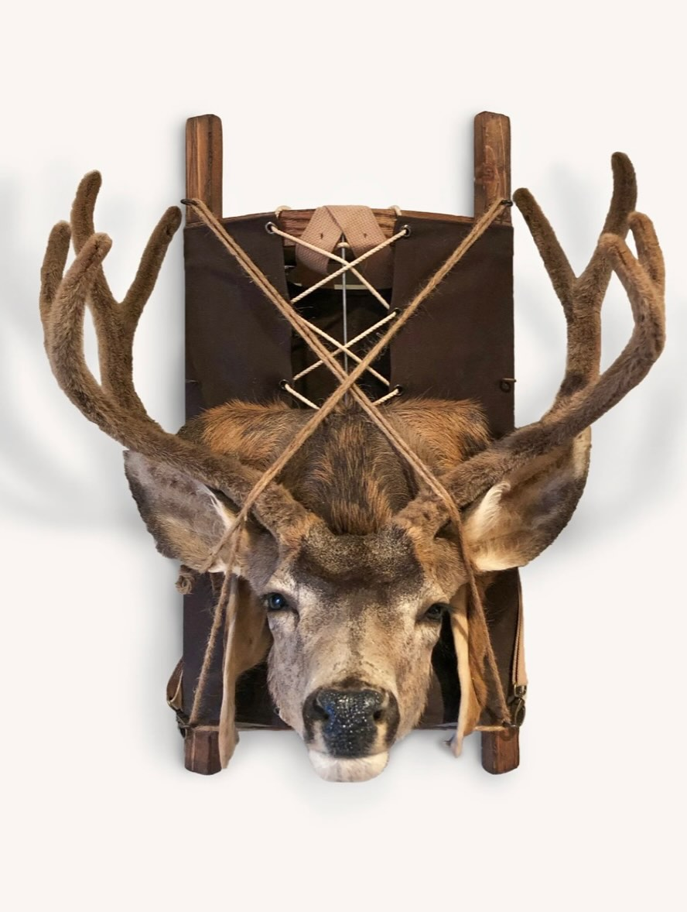
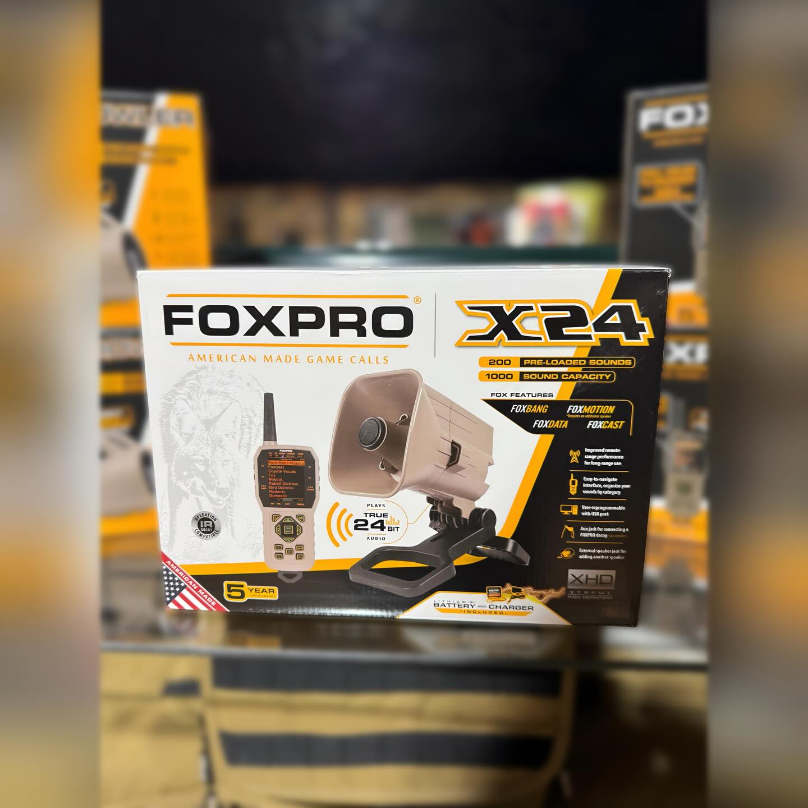
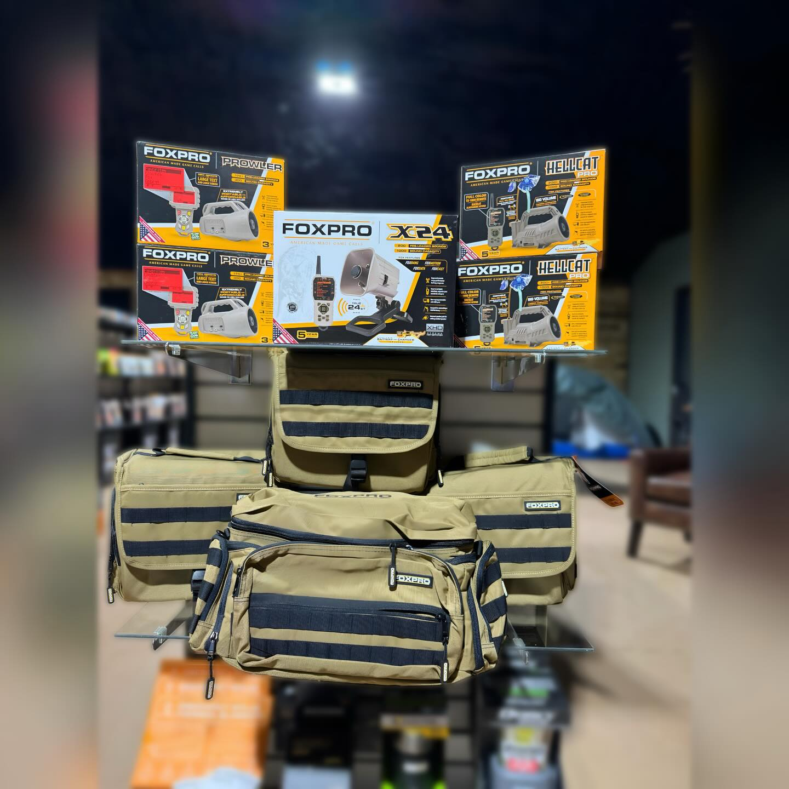
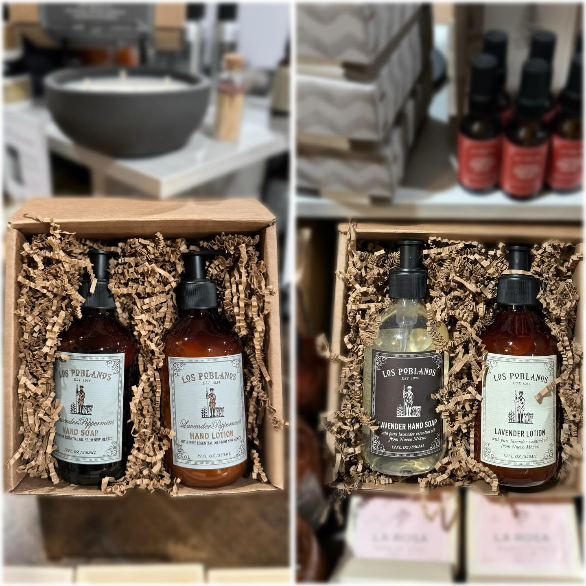

More Than a Gift Shop
The Highland is one of the newer and more ambitious retail additions to Cloudcroft. It combines premium gifts, New Mexico-made goods, pantry items, boots, outdoor gear, hunting and fishing licenses, and practical mountain products under one roof — a hybrid of upscale gift store, outdoor-lifestyle shop, and regional provisions store.
What sets The Highland apart is the range. This is not a single-lane gift shop or a strictly utilitarian outdoor counter. It stocks Nambé ware alongside Danner, Kenetrek, and Crispi boots. Los Poblanos lavender products share shelf space with FOXPRO game calls and tactical bags. That breadth makes it a stronger all-around retail stop for both visitors browsing for gifts and mountain residents picking up gear.
Local reporting in the Cloudcroft Reader described The Highland as newly open in June 2025 on James Canyon Highway, positioning it as one of the newer retail players in town — built to upgrade the basics rather than replicate what was already here.

What Makes It Different

Outdoor-Lifestyle Hybrid
The Highland is not a novelty gift shop or a strictly utilitarian outdoor store. It blends premium gifts and New Mexico-made goods with serious boot brands and hunting gear — a broader and more contemporary retail concept than most mountain-town shops.
New Mexico Roots
Regional identity runs through the inventory. Nambé ware, Los Poblanos lavender products, and New Mexico-made pantry items give the store a sense of place that goes beyond generic mountain retail. This is a shop that stocks what the state actually makes.
Newer & Ambitious
Opened in 2025, The Highland is one of the newest retail additions to Cloudcroft. Local coverage in the Cloudcroft Reader positioned it as a store built to upgrade the basics — more premium gifts, regional goods, and outdoor brands in one place.
Visit The Highland
Everything you need to know before you go.
Location
206 James Canyon Hwy, Cloudcroft, NM 88317. On the main highway through town — look for the carved log entrance.
Hours
Mon–Sat 10 am – 6 pm
Sun 10 am – 5 pm
Hours from Instagram. Check directly before visiting — seasonal changes are possible.
Contact
Phone: 575-682-1041
Instagram: @thehighland9k
Good to Know
This is a retail shop, not a café or restaurant. Hunting and fishing licenses are available here. Hours may shift seasonally — check their Instagram or call ahead to confirm. No online store has been confirmed.
Inside The Highland





Premium Gifts & Outdoor Gear in Cloudcroft
The Highland brings together New Mexico-made goods, serious outdoor brands, and premium gifts on James Canyon Highway. A newer, broader kind of mountain shop worth a stop.